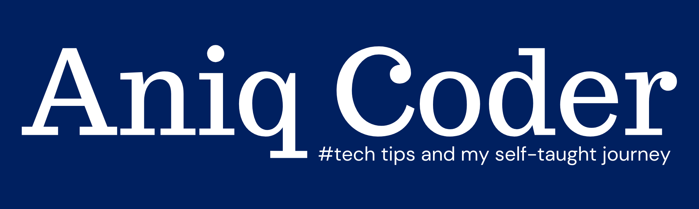

Learning to Code
Tips and Resources
Learning Roadmap
- Good Computing Fundamentals — How computers work and understanding the fundamentals of programming:
data types, syntax, if/ else, loops, arrays, functions. Computers are very logical - they follow steps and a
set of instructions.
- Pick a Language and Speciality — Don't over research and delay pick a language and learn away.
- Gather Resources and know your Learning Style — A learning platform with a built in IDE Code Editor -
IDE (Integrated Development Environment). Use VARK to tailor your learning to your method of learning.
- Project Work — Start a zero based project example and write comments in your code for future
reference.
- Find a Community — Join a coding community (online or in person) to help motivate you to learn.
Resources List
- freeCodeCamp — Learn to code - for free.
Build projects. Earn certifications. freeCodeCamp has a YouTube channel and a built in IDE on there
website.
- Codecademy — Learn to code - with a free or
the pro (paid) version. Build projects. Earn certifications. Codecademy have a built in IDE on there
website. They teach the fundamentals of programming and have a well-established Web Development course.
You have the ability to choose a career path: front-end, back-end or Data Scientist.
- Solo Learn — Learn to code - for free. Solo
Learn has a great Andriod app with quizzes and challenges to review your learning. They have a community
online too!
- Udemy — Online courses from
around £10 - £30. Courses on web development and solo courses for all programming languages. You can
study computing fundamentals, a career path like web development or just one stand alone programming
language.
- YouTube
Good Fundamentals and Careers
There are lots of different jobs in the industry, but most of them have common fundamentals. Web developers use
programming languages to build websites and web applications. A good grasp of HTML, CSS and JavaScript is
important, as they are the building blocks of websites. You should also know that there are libraries of code
already written for developers to pick up and expand on. The vast majority of new websites are not built from
scratch, they are built on top of a basic platform. You don't have to know how to use these libraries but you
should have a basic understanding of what they are.
How to think like a programmer? — problem solving and approach behind it → from Problem to Solution
- Front-end — HTML, CSS, Bootstrap, JavaScript, DOM, Frameworks | client and browser
- Back-end — Java, Python, C#, SQL, MongoDB, Object-oriented Programming | server and databases
- Full-stack — Combination of both front-end and back-end
- Data Scientist — Data Science combines a range of skills to analyse data collected from the web,
smartphones, customers, sensors, and other sources to derive actionable insights. Data science encompasses
preparing data for analysis, including cleansing, aggregating, and manipulating the data to perform advanced
data analysis. Analytic applications and data scientists can then review the results to uncover patterns and
enable business leaders to draw informed insights.
- User Interface (UI) & User experience (UX) — UX is focused on the user’s journey to solve a problem,
UI is focused on how a product’s surfaces look and function. A UX designer is concerned with the conceptual
aspects of the design process, leaving the UI designer to focus on the more tangible elements. There is no
difference between UX and UI design because they are two things that aren’t comparable to each other. UI is
the bridge that gets us where we want to go, UX is the feeling we get when we arrive. UI is focused on the
product, a series of snapshots in time. UX focuses on the user and their journey through the product.
Tech Career Options
Your Learning Style
The VARK model of learning styles suggests that there are four main types of learners: visual, auditory,
reading/writing, and kinesthetic. Adapting your learning method to your prefered learning style can
help you understand concepts better. People might find that understanding their own learning preferences can be
helpful. If you know that visual learning appeals to you most, using visual study strategies in conjunction with
other learning methods might help you remember and enjoy your studies more. If no single learning preference
calls out to you or you change preferences based on the situation or the type of information you are learning,
you probably have what is known as a multimodal style.
The VARK Questionnaire
- (V) Visual Learner — (pictures, movies, diagrams) Try creating a Mindmap or flowchart of the concepts
this will help you see how they fit into the overall bigger picture.
- (A) Auditory Learner — (music, discussion, lectures) Watch the YouTube videos above to learn
concepts, create mnemonics to remember things!
- (R) Reading and writing Learner — (making lists, reading textbooks, taking notes) Create a list of
key terms and review them. Write notes out by hand to consolidate what you have learnt.
- (K) Kinesthetic Learner — (movement, experiments, hands-on activities) Write concepts on post-it
notes and move them place them on your wall to see links and connections.